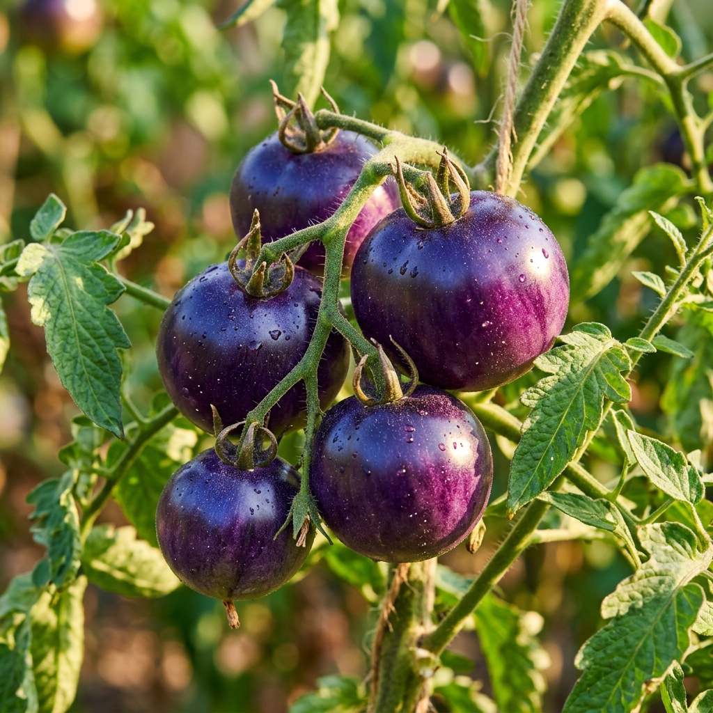

Breeding the Future of Food, Together.
A citizen science initiative to develop new and interesting plant varieties for the public good.
Explore Our ProjectsCurrent Projects

The Chromatic Squash Initiative
Using advanced in-vitro mutagenesis and selection to unlock novel antioxidant-rich colors in Honeynut & Butternut winter squash.
Learn More →
Litchi Tomato Domestication
Working to remove spines, improve productivity, and retain disease resistance in the intriguing Litchi Tomato (*Solanum sisymbriifolium*).
Learn More →
Open Source Purple Tomato
Developing a free-to-use, cisgenic purple tomato with elevated anthocyanins — open source from day one.
Learn More →Project Timeline
Foundation Trials & Lab Work
Squash: Developing in-vitro procedures and applying mutation pressure to cell cultures in the lab.
Litchi Tomato: Major grow-out to build a large seed pool and identify natural variance. Note: no mutated seeds will be distributed in 2026, but we may attempt UV or X-ray mutation on pollen.
Purple Tomato: Defensive publication complete. Construct design and in planta transformation attempts underway.
First Regenerated Grow-Outs
Squash: First seedlings from successful lab selections will be grown and evaluated.